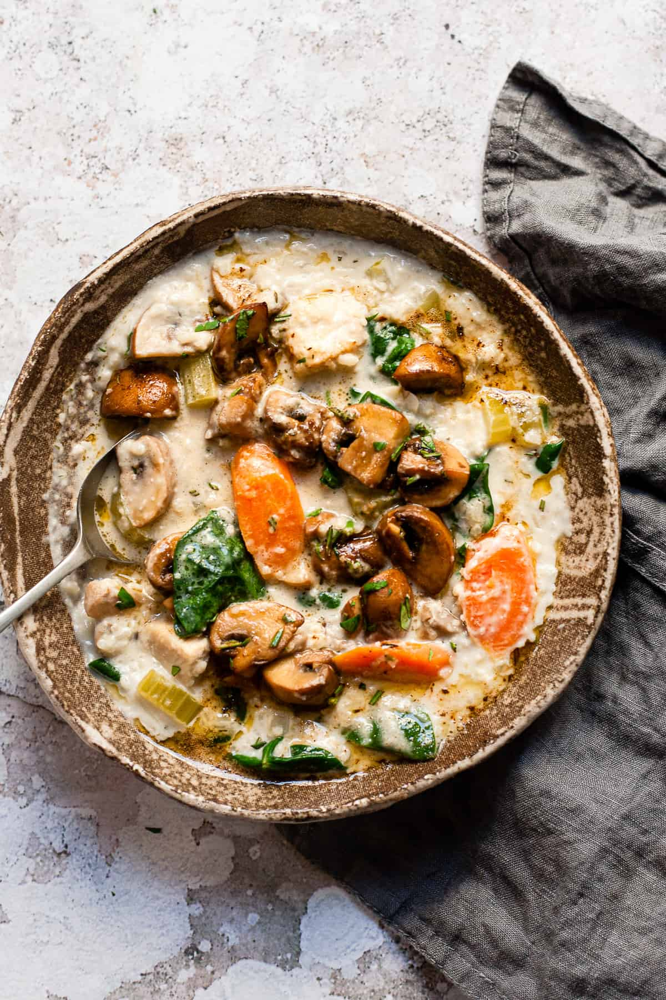
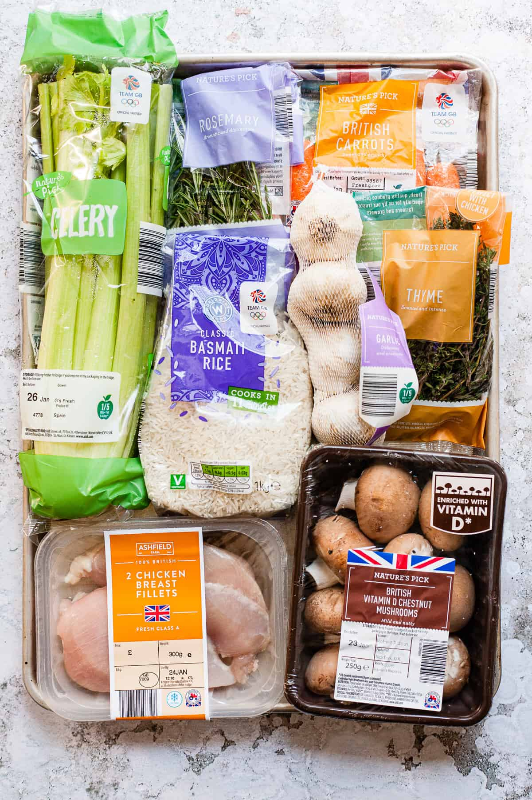

Chicken and mushroom soup

We're giving creamy chicken soup a complete update for the modern slow cooker era!
Instead of just some chicken, mushrooms, and cream, we're adding in carrots, celery, spinach and some rice.
As well as the cream and the mushrooms. But we're pan-searing the mushrooms with some rosemary and butter!
Just a little indulgent for when we need to practice the most amount of self-care but also need to keep it healthy!
Ingredients

- Chicken breast- boneless and skinless.
- Mushrooms- brown chestnut mushrooms because they have a deeper flavour.
- Onion, carrots & celery- the trio that starts off every amazing flavour filled soup! We throw in some garlic too because there's always room for garlic!
- Basmati rice- the rice does so many things here. Helps to bulk out this soup when you're trying to stretch your budget. It also brings creaminess and flavour to the soup.
- Chicken stock from a stock cube- you can use vegetable stock here too.
- Fresh herbs- rosemary, thyme and parsley. In a pinch, you can use dried rosemary and thyme, but I very much suggest fresh parsley for the finished soup.
- Single cream- we're only using 300ml for the whole soup, so yes. This soup is still very healthy!
Steps
- Chop the chicken into chunks and if you have a "cook and sear" slow cooker then place it on the hob with some olive oil and brown the chicken.
- Once the chicken is browned now you can add in the carrots, celery, onion, rice and thyme leaves.
- Make the chicken or vegetable stock using the stock cube and about 1.25l of boiling water. If you're feeling fancy you can use two stock cubes here.
- Pour in the hot stock and cook on a high heat setting for about 3 hours. The rice will be tender but then and starting to soak up some of the broth so your soup will be very thick.
- Once the rice is tender and the chicken is cooked through turn off the slow cooker.
- Pour in the cream and add in the spinach. Give everything a really good stir and replace the lid back on the slow cooker to wilt the spinach.
- Meanwhile, quarter the mushrooms and heat the nonstick pan on high heat.
- Add some olive oil to the pan, add in the mushrooms and sear until the mushrooms are golden.
- Add in some butter and the chopped rosemary. Once the mushrooms are golden, add them to the slow cooker along with the browned butter and rosemary.